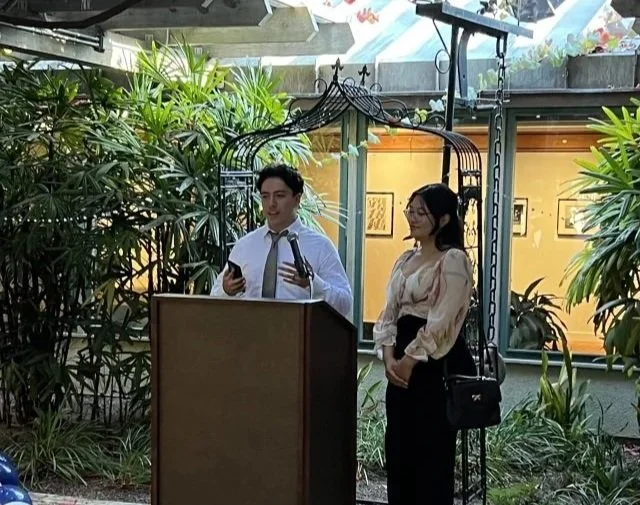
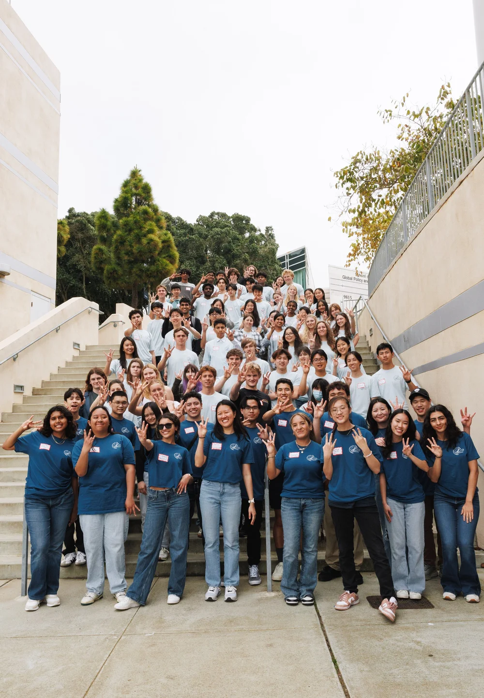
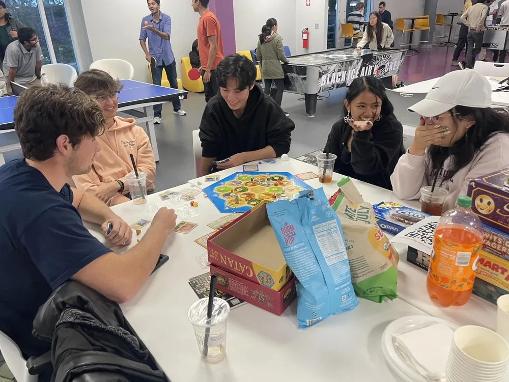

Apply for Board
Board is a chance to build leadership skills, plan meaningful events, and help shape the scholar community. Applications are typically released in early October.

Discover Scholars Society
Membership is automatic for scholarship recipients, and students can get more involved by joining committees, taking on leadership roles, or attending signature events throughout the year.
Get Involved

Board is a chance to build leadership skills, plan meaningful events, and help shape the scholar community. Applications are typically released in early October.

Thursday evening events and Sunday pickleball are the best way to meet people, share laughs, and build friendships that last beyond college.